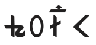
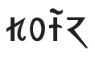
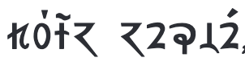
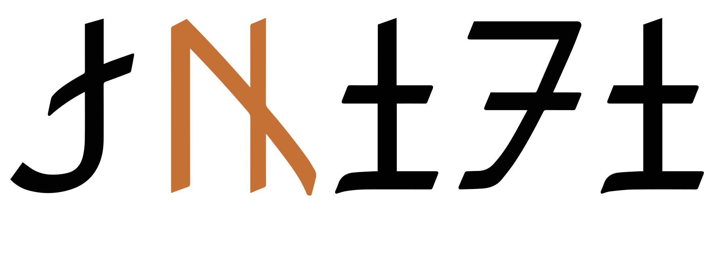
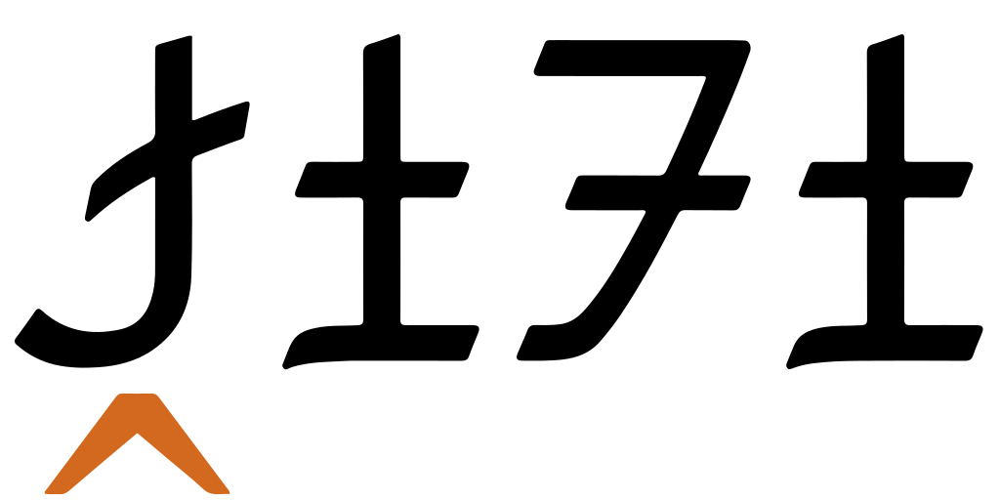
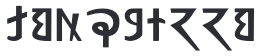

This page brings together basic information about the Sunuwar (Kõits brese) script and its use for the Kiranti-Kõits language. It aims to provide a brief, descriptive summary of the modern, printed orthography and typographic features, and to advise how to write Kiranti-Kõits using Unicode.
Spelling in Kiranti-Kõits in not standardised, and at least two different approaches can be found in contemporary publications. Throughout the page we will compare and contrast the orthographies used for the Hamso magazine and the Sikkim Herald. The former follows recent conventions promoted by the Sunuwar Welfare Society in Nepal, and the latter applies reforms advocated by Lal Shyakarelu Rapacha around the turn of the century. Both publications are still published following their respective orthographies.
Sunuwar is scheduled for inclusion into the Unicode repertoire in version 16, and this page uses the code points that are expected to be used then.Because Sunuwar is not yet encoded in Unicode, some links may not produce results.
The modern form of the Sunuwar script was developed by Krishna Bahadur Jentich in 1942, to write the Sunwar language, The Sunwar language is spoken by around 40,000 people in Nepal and Sikkim (India)@Ethnologue,https://www.ethnologue.com/language/suz/, however the speakers usually write in Nepali using the Devanagari script. It is hoped that the inclusion of Sunuwar in the Unicode Standard, and help from UNESCO may begin to change that.
Since 1996 Sunuwar has been one of the official languages of Sikkim, where it is known as Mukhia. The script has been used in newspapers, government records, and other publications. In 2021 the Sikkim government mandated that state-run schools should offer instruction in both the primary language of the state and in a local language, which is likely to include Sunuwar.a
̃
Various additions and improvements have been made to the script, particularly around the turn of the century, and additional changes to the orthography were proposed as recently as the early 2020s. While there is no formal standard for the orthography, the Sunwar Welfare Society of Nepal promotes a repertoire that may be considered a de facto standard.a A slightly different set of orthographic rules are (still) used in the publication of the Sikkim Herald, originating from changes proposed by Lal Shyakarelu Rapacha, who created some of the first fonts for Sunuwar.
The Sunuwar script is used as both an alphabet and an abugida. When used as an alphabet (in Nepal) it is phonetic in nature, where each letter represents a basic sound. When used as an abugida (in the Sikkim Herald), each consonant has an inherent vowel. See the table to the right for a brief overview of features for the modern Sunuwar orthography.
Sunuwar text runs from left to right in horizontal lines. Words are separated by spaces.
The orthography is unicameral.
Sunuwar uses 27 consonant letters. Use of the script is not yet fully standardised, and although the repertoire was augmented with new consonant letters, especially for aspirated and retroflex sounds, around the early 2000s, sometimes older ambiguous or digraph-based spellings still appear. ❯ consonants
Consonant clusters and gemination are indicated by using regular consonant letters in Nepal, but in Sikkim clusters are indicated using 0331 below consonants that are not followed by a vowel sound. There are no conjuncts, and no special characters for syllable final consonants. However, in Sikkim, a special diacritic is used for the medial /-r/. ❯ clusters, onsets
The Sunuwar script has 6 vowel letters that are all ordinary spacing characters. Long vowels are indicated by following the vowel character(s) with a colon. Nasalisation is indicated by a combining tilde above the vowel letter in Nepal, but a combining candrabindu in Sikkim. ❯ vowels
Standalone vowel sounds are written using ordinary vowel letters.
A set of 3 combining marks are currently being promoted in Nepal in order to represent Sunuwar tones. Tones are not marked in Sikkim.
Punctuation is the same as that used for the Latin script. Sunuwar has its own set of digits.
Line-breaking and justification are primarily based on inter-word spaces.
The following represents the general repertoire of the Sunwar language.
Click on the sounds to reveal locations in this document where they are mentioned.
Phones in a lighter colour are non-native or allophones. Source Wikipedia.
Vowel sounds
Plain vowels
Diphthongs
The sound a may produced phonetically as ə. It is placed in the chart in a position that indicates the general area of production. Other allophones include y and ɛ.
The following information is derived from notes written by K B Jentich, the inventor of the Sunuwar script, that can be found in the Unicode proposal document.a,23
Sunuwar has 4 tones.
A flat, long, mid tone.
Rises quickly from the mid to high register.
Is initially long and low, but turns upwards to the normal pitch at the end.
A short, low drop.
Structure
tbd
Vowels
Vowel summary
Additional combining marks are used for nasalisation and tone (not shown here).
Although originally conceived as an pure alphabet, Lal-Shyamkarelu Rapacha proposed applying the orthographic model of neighbouring scripts by omitting the letter for the short ə sound between consonants. Although other Sunuwar texts continue using the alphabetic model, the Sikkim Herald omits this short vowel, and the diacritic 0331 is used below a consonant to indicate that it is not followed by a vowel sound. (See some examples.)
The Nepali Hamso magazine is alphabetic and has no inherent vowel, nor the vowel killer diacritic.
Vowel letters
Sunuwar uses 6 ordinary spacing letters to write vowel sounds.
␣␣␣␣␣
In Sikkim, the letter 11BC8 is normally used to represent the sound ə at the beginning of a word or after a vowel, but not after a consonant, since it represents the sound of the inherent vowel. In Nepal, the sound ə is written using this letter wherever it occurs.
Although the letter 11BD6 was initially introduced to represent the long aː sound, it's use is sometimes inconsistent and may represent a shorter sound.
Standalone vowels
In Nepal, no distinction is made between letters to represent standalone vowels and other vowel usage.
In the Sikkim Herald a word-initial ə tends to be represented by . When the same sound occurs within a word it is treated as the inherent vowel in Sikkim, and is therefore not written.
Vowel length
:
The script made no distinction between short vs. long vowels until around the turn of the century, when Rapacha introduced a mark called laissi that looks identical to a colon. This mark is represented in Unicode using the ASCII 003A after a vowel letter, and is widely used in Sikkim and Nepal.
: goːm tənaːtən
In some sources the vowel lengthener has been surrounded by parentheses, in order to distinguish it from an actual colon, but this is not mainstream.
Because 003A is sometimes also used as a punctuation mark, if it follows a vowel letter the colon is typically preceded by a space, to make it clear that it is not a vowel lengthener.
The letter was also added to the script in the early 2000s, ostensibly as a long aː vowel, contrasting with the letter , which was used for the short vowel.
Observation: Hamso appears to generally use AAL for the short sound, although APPHO does appear occasionally. For the long sound, it puts a colon after AAL. See examples.
For the Sikkim Herald, it appears that APPHO represents the sound used as the inherent vowel, and it only surfaces for word-initial A and diphthongs. AAL is used for the long vowel (with no colon). See examples.
Nasalisation
̃␣̐
Originally, nasalisation was indicated by the letter , but that could be ambiguous in some situations. A first attempt to improve on that recommended the use of the combining mark 0310 (called taslathenk), rendered as a flat line with a dot above. That diacritic is still used in the Sikkim Herald.

Nasalisation in the Sikkim Herald.show composition
̐
In Nepal, the Sunuwar Welfare Society promotes the use of the combining mark 0303 instead, and this is what the Hamso magazine uses.

Nasalisation in the Hamso magazine.show composition
̃
Tones
Although the Sunuwar language has 4 tones (see tone), they have not been marked in Sunuwar orthography until recently, when Sunuwar experts in Nepal recommended the use of 3 new tone diacritics. The code points come from outside the Sunuwar block.
̍␣́␣̀
The first is described as a stress mark, and the other 2 as high and low tone marks, respectively. Over dipthongs the tone mark tends to appear over the first vowel, and the nasalisation mark over the second, avoiding the need for stacked glyphs.

The following examples show contrasting use for words:
This section maps Sunuwar vowel sounds to common graphemes in the Latin orthography. Uppercase is not shown. Click on a grapheme to find other mentions on this page (links appear at the bottom of the page). Click on the character name to see examples and for detailed descriptions of the character(s) shown.
Because additional characters were added to the repertoire relatively recently, it is possible to find a mixture of spellings. In particular, the following correspondences occur.
New letters provide clarity over old ambiguous or absent letters:
Sound
New
Old
ʈ
ɖ
ʃ
ʔ
none
Aspirated and velar sounds may be written with a new letter, or the old digraph:
Sound
New
Old
pʰ
tʰ
ʈʰ
kʰ
ŋ
Vowel nasalisation may be written with a new diacritic rather than the ambiguous consonant letter. See nasalisation, however, for another alternative.
In the Nepali Hamso magazine consonants without following vowels are not marked in any special way. A lone consonant is not pronounced with a following vowel.
In Sikkim
◌̱
In the Sikkim Herald, however, the diacritic ̱ (called sangmilu) can be used to indicate a consonant which is not followed by an inherent vowel.
Onset consonants
In Nepal
In Nepal, medial -y and -r sounds are written by simply adding the relevant consonant after the syllable initial (see fig_medial_r).
In Sikkim
In Sikkim, onset clusters involving a medial -j are written using the virama-like ̱ (see sikkim_clusters).
A special combining mark, 032D (called sangrums) may also be used below an initial consonant to represent a medial -r.


The word for script in the Nepalese orthography (top) and the Sikkim orthography (bottom). Click on each word to see its composition.
Final consonants
No special code points are used to indicate syllable-final consonant sounds.
Consonant clusters
In Nepal
In the Nepali Hamso magazine there are no conjunct forms or other special mechanisms to indicate consonant clusters. A cluster of 2 consonants is written by simply adding the 2 consonants.
In Sikkim
Since the Sikkim Herald uses an abugida, the inherent vowel needs to be visually cancelled.
A basic cluster is indicated using ̱ (see novowel), like a virama, below the consonant with no following vowel.
Click on the following word to see its composition.
At one point a proposal was made to create conjunct forms, including a repha glyph for r, 1DF5 (called sangkirs), but it was not accepted by the community, since it was seen as adding unnecessary complications to what is a straightforward orthography.a,3-4
The proposed characters included the following, and an incomplete set of half-forms for conjuncts.
Gemination
Consonant gemination is indicated by doubling the consonant.

Consonant sounds to characters
This section maps Sunuwar consonant sounds to common graphemes in the Latin orthography. Uppercase is not shown. Click on a grapheme to find other mentions on this page (links appear at the bottom of the page). Click on the character name to see examples and for detailed descriptions of the character(s) shown.
Sounds listed as 'infrequent' are allophones, or sounds used for foreign words, etc.
Stops
p
b
ɓ
t
ʈ
d
ɖ
k
ɡ
ʔ
Aspirated
pʰ
tʰ
ʈʰ
kʰ
Affricates
t͡ʃ
t͡ʃʰ
d͡ʒ
Fricatives
v
s
ʃ
h
Nasals
m
n
ŋ
Other
w
r
l
j
Symbols
represents an 'auspicious syllable', which is uttered, often twice, before a formulaic phrase. The sign is written in salutations and benedictions, and its basic trident shape can vary in the details.a,8
Numbers, dates, currency, etc
Digits
Sunuwar has its own set of digits, with a decimal base.
␣␣␣␣␣␣␣␣␣
Text direction
Sunuwar text is written horizontally, with lines that flow from top to bottom.
Glyph shaping & positioning
This section brings together information about the following topics:
writing styles;
cursive text;
context-based shaping;
context-based positioning;
font styles;
case & other character transforms.
Sunuwar letters are not joined, and are not cased.
Context-based shaping & positioning
Since the letters are all the same height, there tends not to be much variation in placement of combining marks.
Some letter shapes may look different across sources.
Font styling & weight
tbd
Graphemes
In normal Sunuwar text, grapheme clusters correspond to individual characters. Where combining marks appear, the combination of base and combining mark still fits within the definition of a grapheme cluster.
Grapheme clusters
Base Mark?
Each letter is a grapheme cluster, as is each combination of a base letter with combining marks.
Punctuation & inline features
Word boundaries
Words are separated by spaces.
Phrase & section boundaries
,␣:␣;␣.␣?␣!
Basic phrase and section boundaries in Sunuwar use ASCII punctuation.
phrase
,
;
:
sentence
.
?
!
Since the shape of the colon is identical to the vowel length indicator, the colon as punctuation is typically surrounded by spaces.
Bracketed text
(␣)
Sunuwar commonly uses ASCII parentheses to insert parenthetical information into text.
Sunuwar texts may use quotation marks around quotations. Of course, due to keyboard design, quotations may also be surrounded by ASCII double and single quote marks.
Sunuwar uses a hyphen at the end of a line to indicate that a word was broken.
Text alignment & justification
The principal line-break opportunities are inter-word spaces.
Text spacing
tbd
Baselines, line height, etc.
tbd
Sunuwar uses the 'alphabetic' baseline.
Counters, lists, etc.
tbd
Styling initials
tbd
Page & book layout
This section is for any features that are specific to Sunuwar and that relate to the following topics:
general page layout & progression;
grids & tables;
notes, footnotes, etc;
forms & user interaction;
page numbering, running headers, etc.
Webfont developed for Sunuwar Welfare Society by JamraPatel, and kindly provided for use with these resources. Thanks also to Lal Shyakarelu Rapacha and Dev Kumar Sunuwar for review.